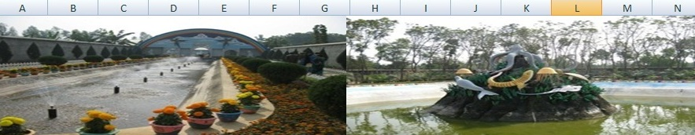
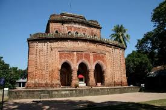
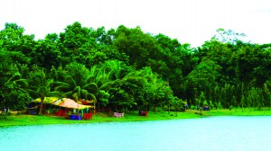
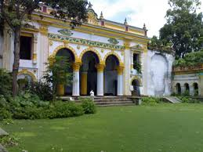

Welcome to shopnopuri,dinajpur
Shopnopuri is one of the most beautiful simulated tourist spot in North Bengal. You can go there either from Hili or from Dinajpur. Shopnopuri is one of the best places to visit.
Kantajew Temple
-  Kantanagar Temple, commonly known as Kantaji Temple or Kantajew Temple at Kantanagar, is a late-medieval Hindu temple in Dinajpur, Bangladesh. The Kantajew Temple is one of the most magnificent religious edifices belonging to the 18th century
-  Ramsagar National Park (Bengali: রামসাগর জাতীয় উদ্যান) is a national park in Bangladesh located at. 25°33'00"N 88°37'30"E Tejpur, near Dinajpur District in ...
Dinajpur Rajbari
Dinajpur Rajbari or Palace is situated on the north-east outskirts of the Dinajpur town. The name of the spot well-known as "Raj Batika", near to ...